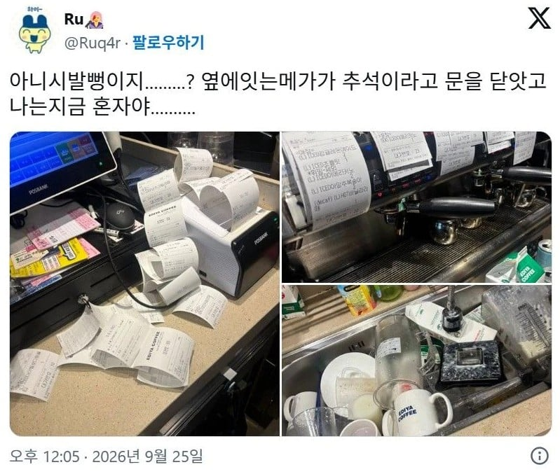
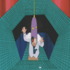

절망한 이디야 알바생
댓글
주문 막아..미친
연휴에 알바 한명 앉혀놓고 안나오는 사장은 대체 뭔 생각일까?
추석 야르~♥︎
나 피자집 다닐 때 저 ㅈㄹ 나서 좆같아서 그만둠
오히려 명절 때 어른들이 카드 던져주면서 아야 거 가서 커피 사온나 머릿수맞춰서 많이 하는데
왜 오히려야 그게
추노하면 도파민 좃되겠다 ..
와 시발 저거보니까 크리스마스날 베라 알바 혼자했던거 생각나네
손님 계속 들어와서 아이스크림이랑 아이스크림 케이크 온거 정리도 못하고 혼자 몇시간 끙끙대고 있으니까 사장님이 cctv 본건지 허겁지겁 와서 냉장고에 쑤셔박았었는데 ㅋㅋ
써리원이랑 크리스마스 매출 10배이벤트인데 점장 병신인듯 ㅋㅋ
사장 바로 안튀어오면 걍 대충해야지 저걸 어째 ㅋㅋㅋ
그냥 되는만큼만 하는거지
혼자면 배달 막고 키오스크도 막아야함 저걸 어째 혼자하노


조까라고 걍 퍼져야지 머 어쩌겠어
돈받으면 해야지
저 무력감 알지..